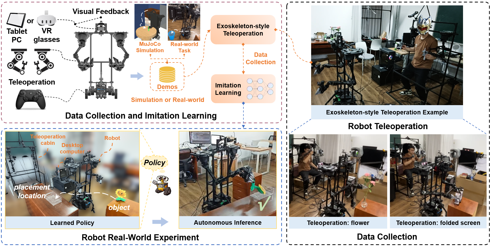
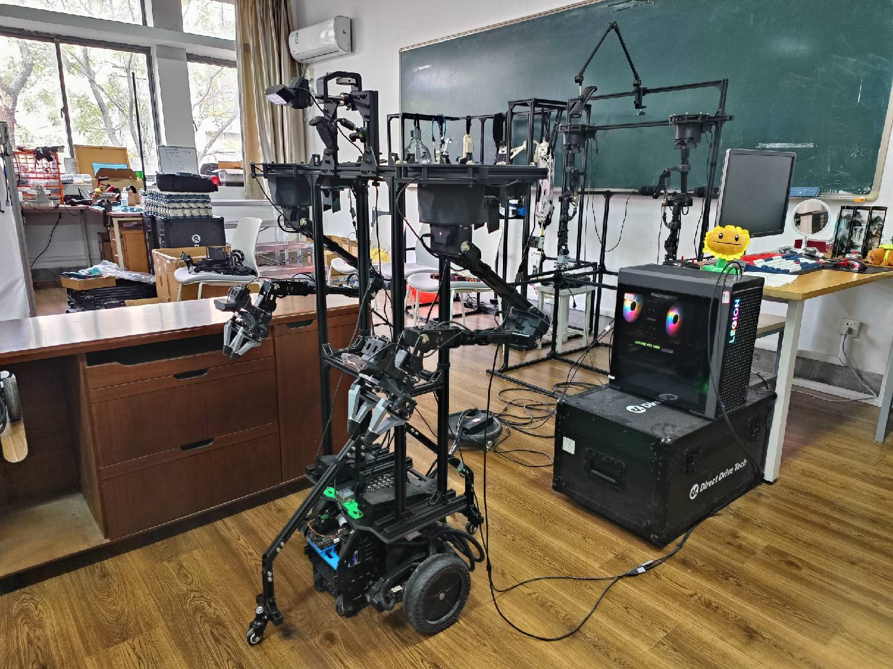
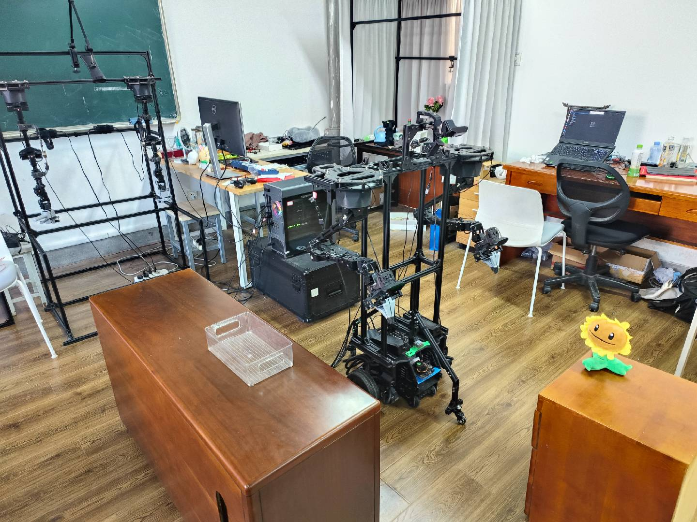
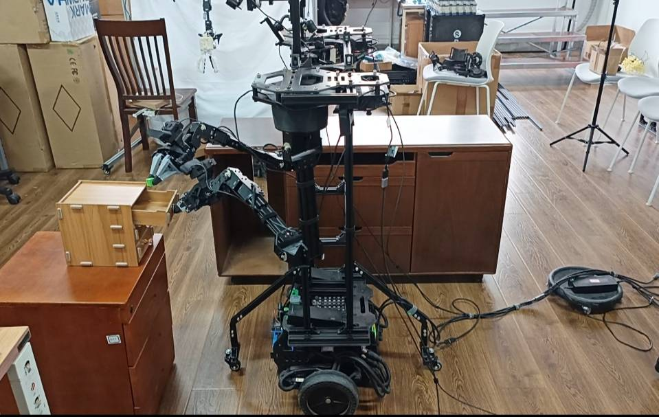
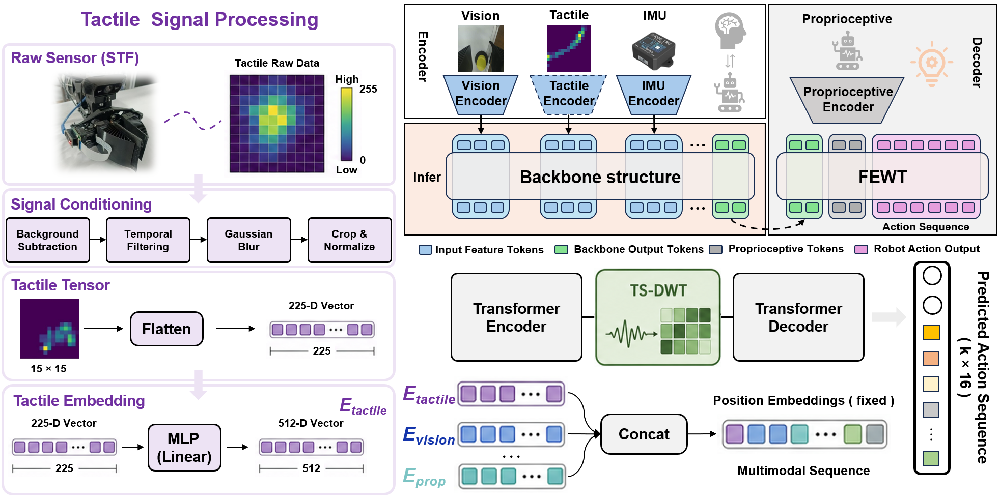
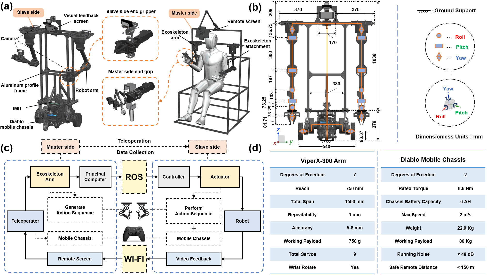
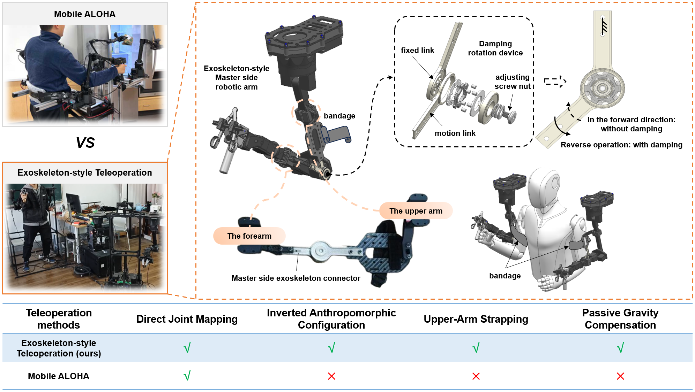
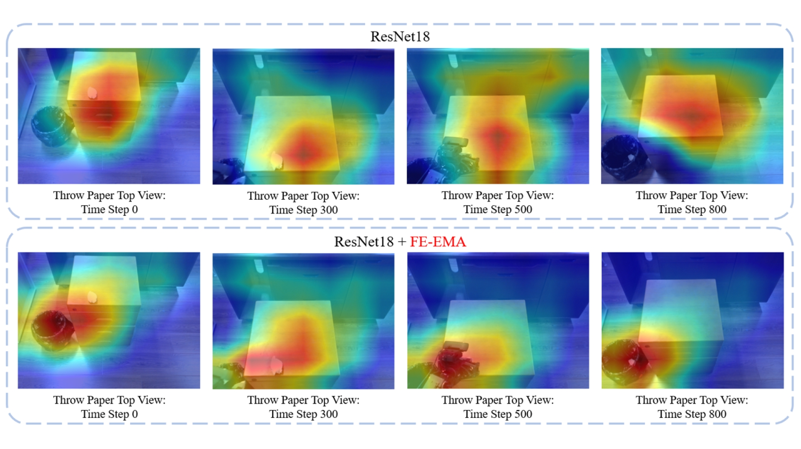
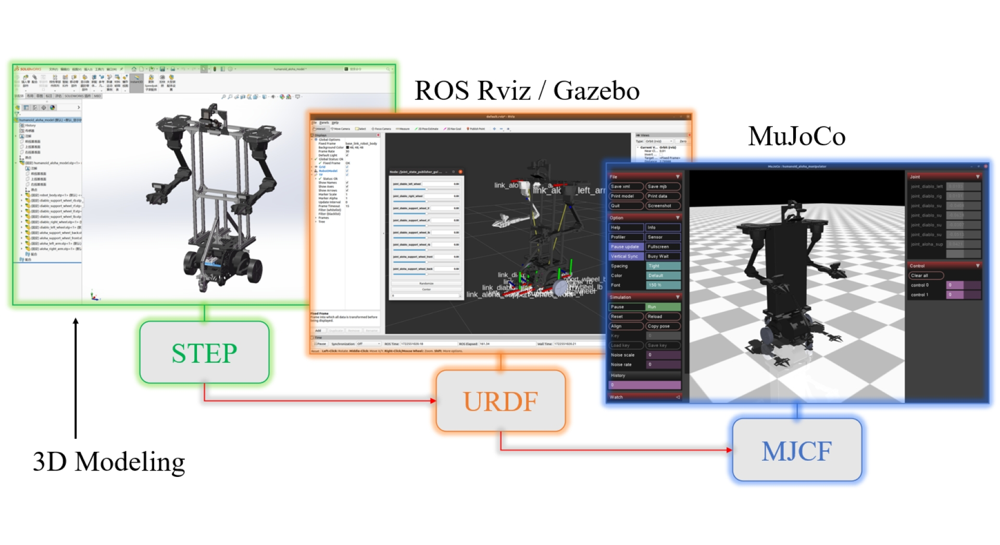

Embodied intelligence bridges the physical world and information spaces, with robots demonstrating immense potential through imitation learning algorithms. In this study, a custom-built wheeled bimanual robotic platform equipped with an exoskeleton-style teleoperation system was utilized to realize intuitive remote manipulation and the efficient collection of anthropomorphic action data. To overcome the representation mismatch between spatial visual semantics and localized high-frequency physical dynamics, we propose a lightweight frequency-aligned imitation-learning framework, termed the Frequency-Enhanced Wavelet-based Transformer (FEWT). FEWT integrates two primary modules: Frequency-Enhanced Efficient Multi-Scale Attention (FE-EMA) and Time-Series Discrete Wavelet Transform (TS-DWT) to explicitly extract and align multi-scale features, improving the compatibility between spatial visual representations and temporal-frequency recalibration. Crucially, for real-world deployment, this framework is further extended into a multimodal system by seamlessly integrating a self-developed Smart Tactile Fabric (STF) sensor into the physical end-effectors, providing local contact-stress information that complements proprioceptive and chassis-motion cues in the shared multimodal representation. Experimental evaluations demonstrate that the core FEWT architecture significantly improves the success rate over the widely used Action Chunking with Transformers baseline, particularly during the most challenging phases of simulated bimanual insertion tasks. Furthermore, in complex real-world mobile and desktop manipulation tasks, the full STF-enhanced system effectively adapts to microscopic dynamic perturbations, yielding substantial performance enhancements.









@article{huang2026fewt,
title={FEWT: Frequency-Enhanced Wavelet-based Transformer for Multimodal Wheeled Bimanual Manipulation},
author={Huang, Jiaxin and Liu, Hanyu and Ma, Yunsheng and Shen, Jian and Zheng, Yilin and Wen, Jiayi and Song, Zhigong},
booktitle={SmartBot},
year={2026}
}